Provisioning the Jump Server
The jump server is a separate TechZone reservation from your z/OS instance. Provision it before your engagement — allow approximately 30 minutes for it to reach Ready state.
⚠️ Note: IBMers only need their regular Cisco AnyConnect to access the environment. External users need to download AnyConnect or connect through the jump server.
- Go to the z/OS Demo Catalog page in the same collection as the z/OS environments and click the Collection Resource button on the Jump Server tile.
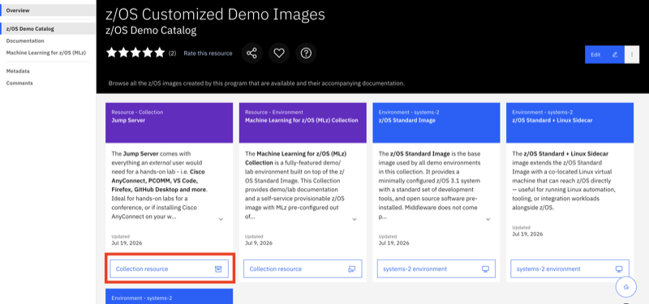
- In the collection it takes you to, click on the Environments tab, and then the "ibmcloud-2 environment" button on the Windows Server 2025 IBM Cloud VPC tile.
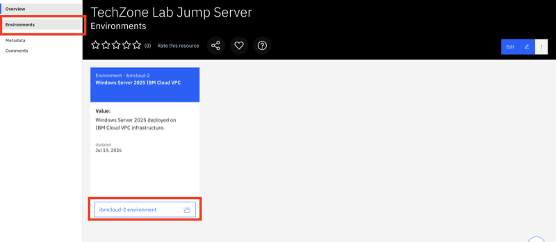
- The Create a Request form will appear. Type in a name and description (can be anything) and click the blue Next button.
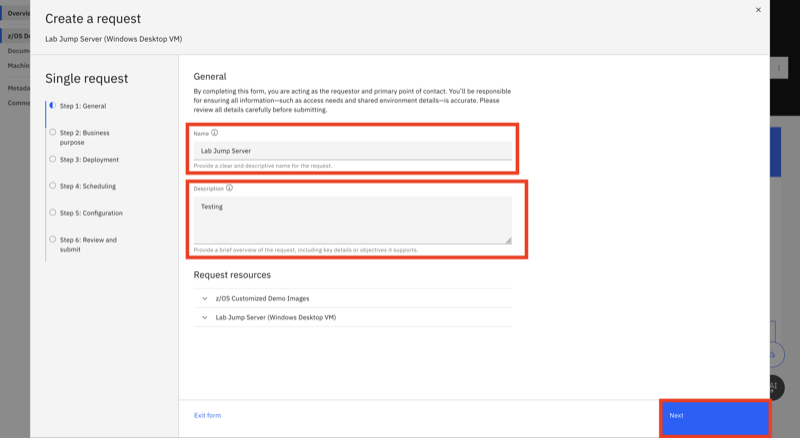
- Select a Purpose. The selection here affects the duration of the reservation. Pilot and Demo require a valid IBM Sales Cloud (ISC) Opportunity ID. Education and Test do not. Once selected, click Next.
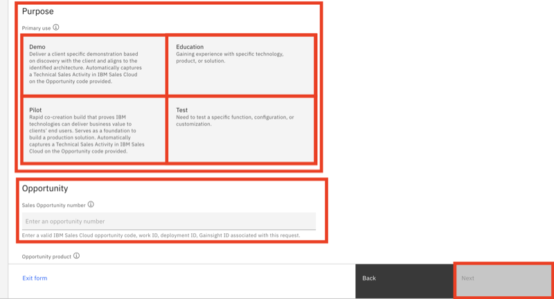
- Select a region. Choose one geographically close to your location for lowest latency. Click Next.
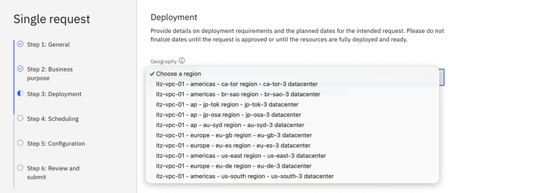
- Select the desired date and time range. Allow for ~30 minutes for provisioning plus additional time before a high-stakes engagement. Click Next.
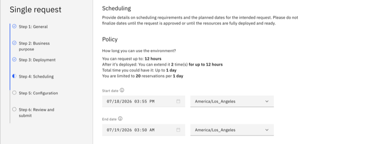
- On the Configuration page, nothing needs to be done. Click the blue Review button.
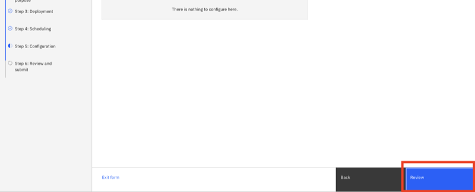
- On the Review & Submit page, scroll to the bottom, check the terms & conditions checkbox, and click Submit.
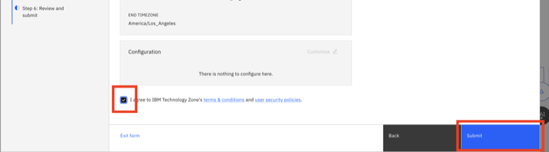
- A success confirmation will appear with your Request ID. Click Track my request to monitor it.
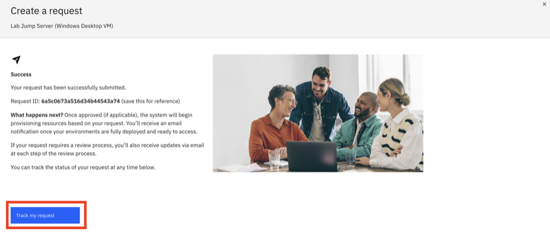
- The reservation will immediately move to Provisioning status. Ocassionally it will first be in Scheduled status to begin, but then should move to provisioning shortly thereafter.
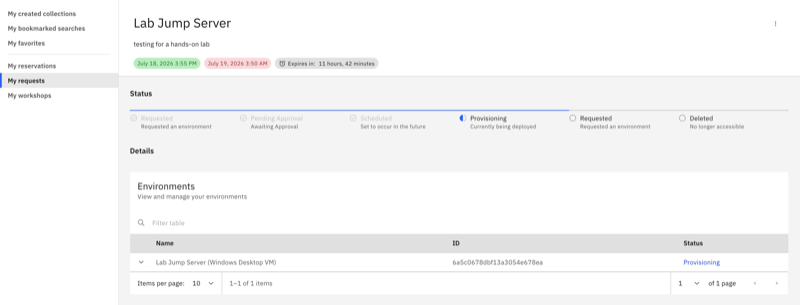
- When the reservation is Ready (approximately 30 minutes), you will receive an email from
noreply@techzone.ibm.comwith subject "Ready: <your instance name> on IBM Technology Zone".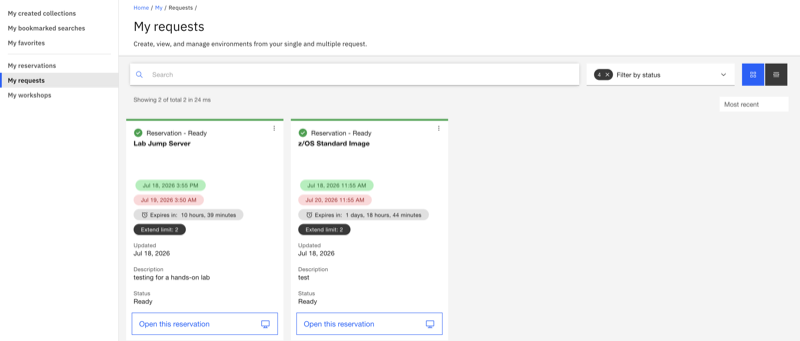
What's Next?
Once the jump server is ready → Connecting to z/OS from the Jump Server